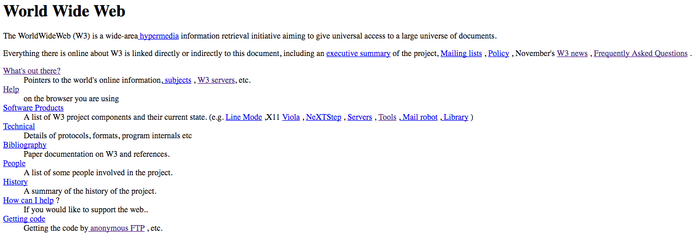
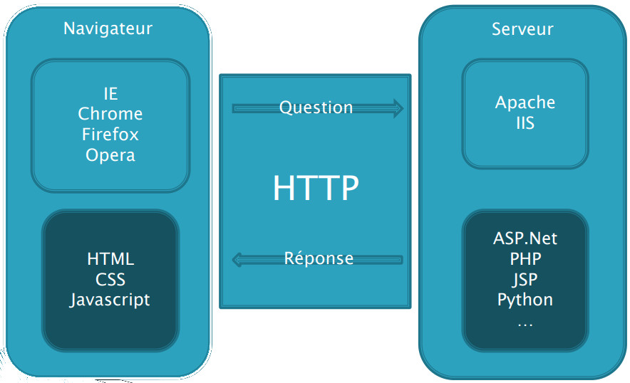
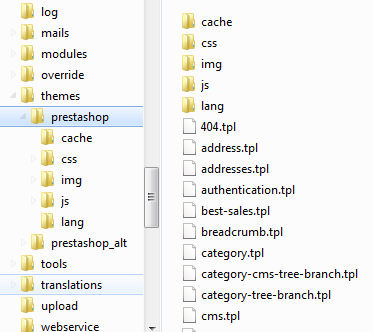

WORLD WIDE WEB
1990 ... 2018
Internet
- = Interconnexion de réseau (network)
- Une toile d'araignée mondiale
- Nécessite plusieurs protocoles de la couche applicative : TCP/IP, URL, DNS, HTTP, FTP
- Plusieurs langages : HTML, CSS, Javascript, système d'exploitation, langages serveurs
- Extensions de fichiers
.html,.php,.asp - En HTML 5 : agencement et habillage via feuilles de styles CSS (polices, couleurs, dimensions...)
Couches réseau

Protocoles
- 1982 : TCP/IP, issu d'ARPANet (début en 1966)
- 1971 : Courrier électronique
- 1983 : Noms de domaines (D.N.S.)
- 1990 : HTTP, URL, HTML et un navigateur (Tim Berners-Lee, CERN/MIT)
- 1990-1993 : Création du W3C, 1er navigateur public "Mosaic", ouverture publique (30/04/1993)
Le premier site (20/12/1990)
Le web en 2018
- 10 sites web en 1991, 1,4 milliard en 2018
- 4 milliards d'internautes (50% de la population mondiale)
- + de 50% de pages vues sur mobile (depuis octobre 2016)
- E-commerce mondial : 1915 milliards USD en 2016, 4000 en 2020 ?
Architecture web
Architecture web

Requêtes HTTP
GET http://www.afpa.fr
Accept: text/html
Accept-Language: fr-FR, en-US;
Host: www.afpa.fr
User-Agent: Mozilla/5.0 Chrome/37.0.2062.120 Safari/537.36
Requêtes HTTP
Status Code: 200 OK
Content-Type: text/html
Content-Length: 3452
Date: Wed, 24 Sep 2014 06:58:04 GMT
Server: nginx/1.1.19
Requêtes HTTP
Hello world !...
Site internet
- Un nom de domaine (D.N.S.): www.afpa.fr
- Un serveur d'hébergement (ex: OVH), avec une base de données (MySql, SQLServer...)
- Code HTML calculé/stocké sur le serveur, il est envoyé au client dans la réponse HTTP.
Site internet
- Un ensemble de ressources : fichiers html, css, js, php, images, vidéos
- Fichiers dans des répertoires = arborescence
- Partie publique = front vs. partie admin = back-office
- Front-end : design des pages vs. back-end : langages serveurs, B.D.D.
Arborescence d'un site
HTML
- Hyper Text Markup Language = langage de description de pages hypertextes
- HTML permet de décrire le contenu de la page (textes, images, vidéos, liens)
CSS
- Cascading Style Sheets = feuilles de style en cascade
- Le code CSS permet d'influer sur l'aspect graphique des éléments HTML. On peut manipuler les couleurs, la marge, la position, la bordure...
- Comme le HTML, le code CSS est envoyé au client lors de la réponse
Javascript (JS)
- Langage permettant de manipuler les éléments HTML à travers le D.O.M.
- D.O.M. : Document Object Model = représentation objet de la page web (éléments HTML)
- Le code Javascript agit sur le client (navigateur)
- Le Javascript permet de modifier des éléments d'une page (y compris CSS) sans rechargement
Langages serveur
- Langages (ou technologies) dont le résultat produit du code client (HTML, CSS, JS)
- Langages : PHP, ASP.NET, Java, Python, Ruby, Javascript (NodeJs)...